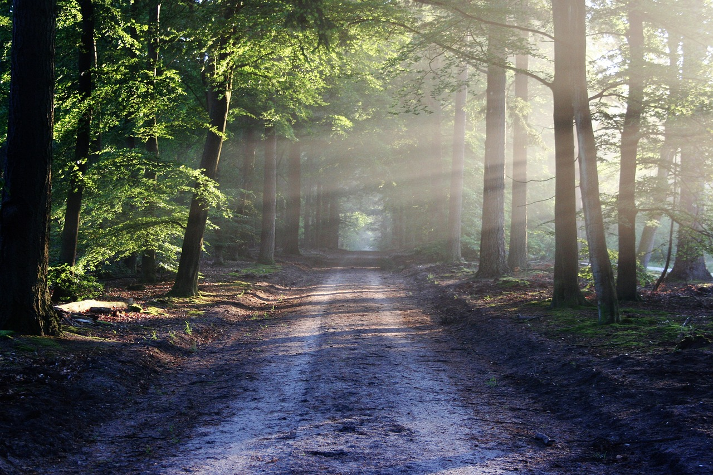

My Blogs
Embracing Innovation in Web Development from Bangladesh
Hello, I'm Mahdi, a dynamic web developer from Bangladesh, dedicated to revolutionizing the digital landscape with innovative designs and cutting-edge solutions. Living in the vibrant city of Dhaka, I blend creativity with technical prowess, crafting websites that are not only visually appealing but also highly functional.
My passion for web development is evident in every project, as I continuously seek new ways to enhance user experiences. From local businesses to international clients, my work reflects the rich culture and rapid technological growth of Bangladesh. Stay tuned to learn more about my inspiring journey and the impact of my work.
My Journey as a Passionate Web Developer in Bangladesh
My journey as a web developer in Bangladesh is a testament to dedication and passion. Starting as a self-taught coder, I quickly mastered the art of web development, gaining recognition for my exceptional skills. Based in Dhaka, I collaborate with diverse clients, turning their visions into reality through bespoke website designs.

My deep understanding of user-centric design and responsive interfaces ensures that every project exceeds expectations. My story is one of perseverance and innovation, highlighting the thriving tech community in Bangladesh and the opportunities it offers to aspiring developers.
My Journey and Achievements as a Web Developer in Bangladesh
Hey everyone, it's Mahdi! As a web developer in Bangladesh, I've had the privilege of working with diverse clients, creating innovative, user-friendly websites

From local startups to global enterprises, my projects blend creativity with functionality, helping businesses thrive online. Join me as I share my journey and achievements in web development!